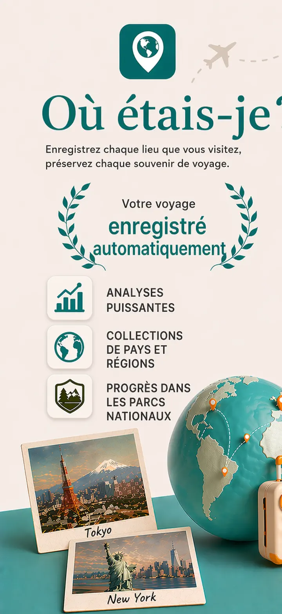
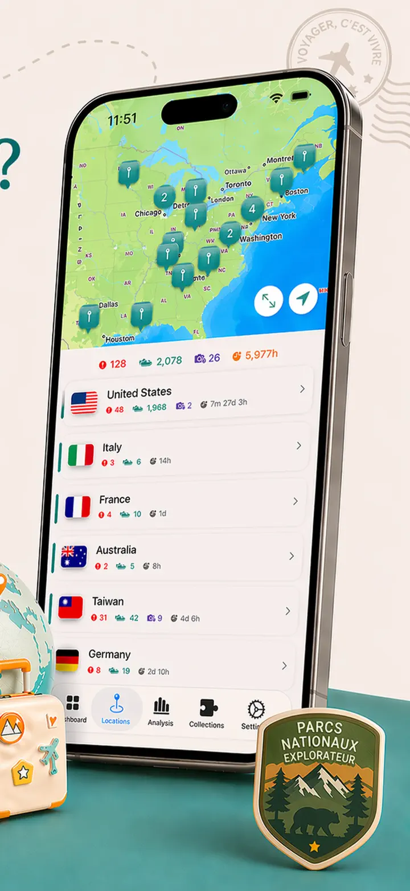
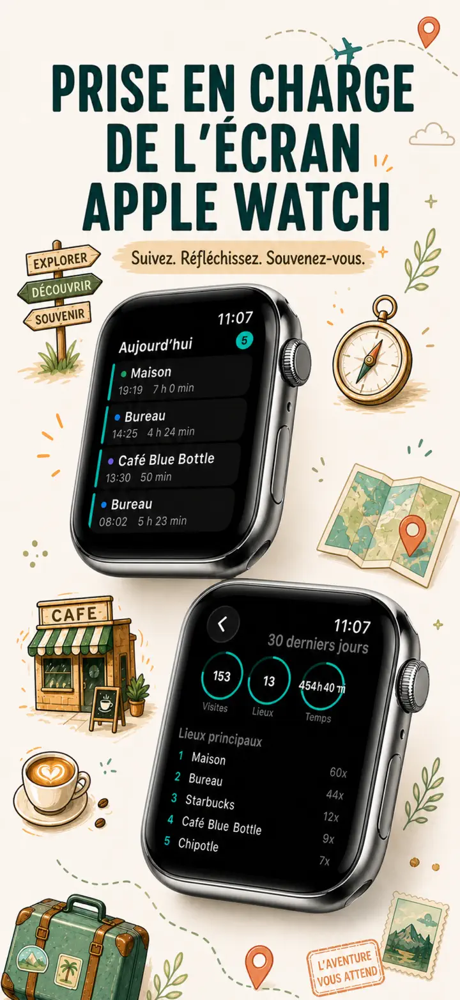
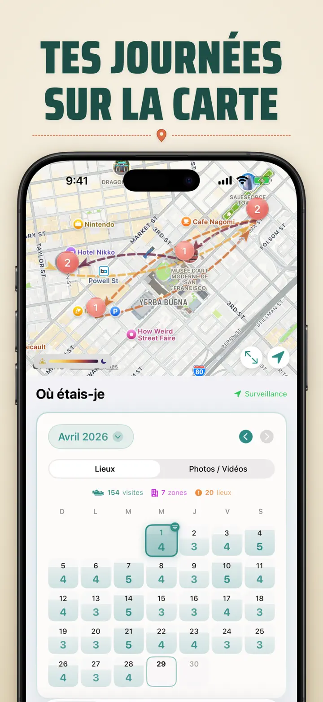
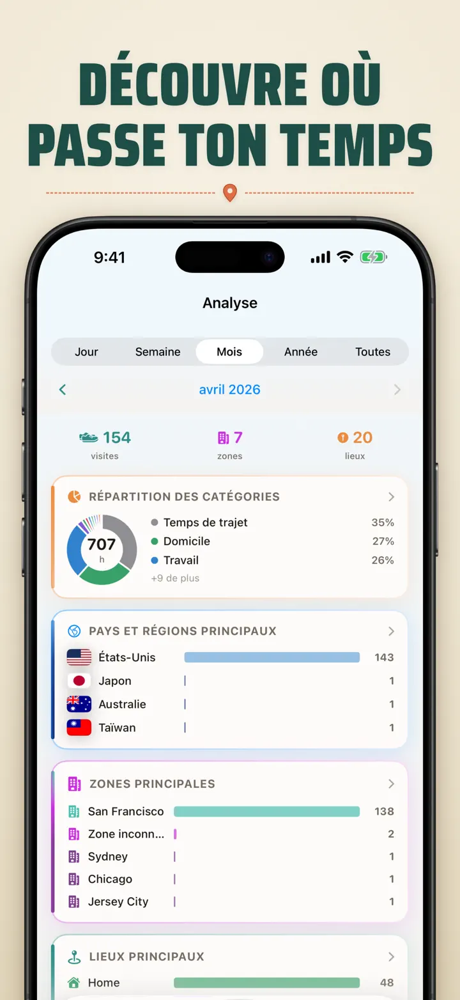
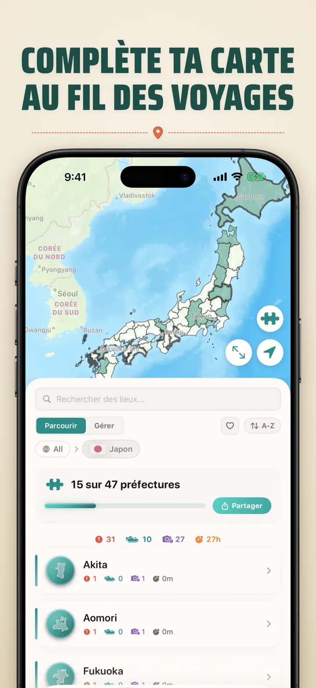
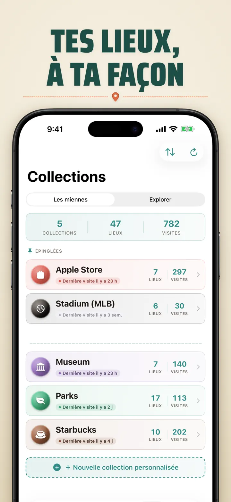
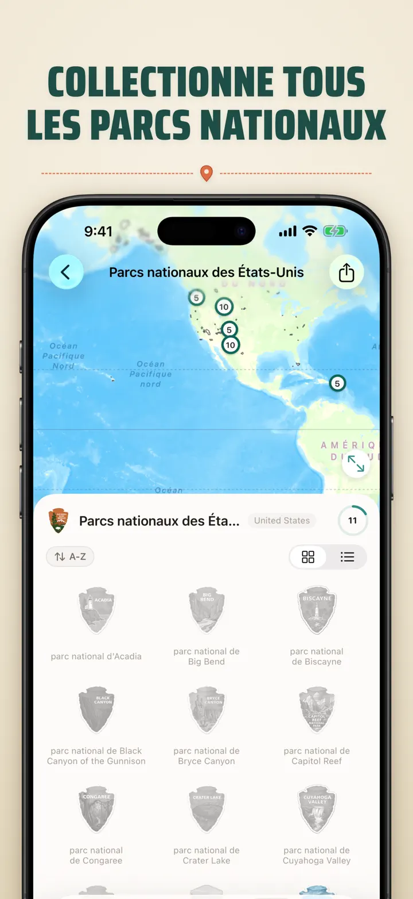
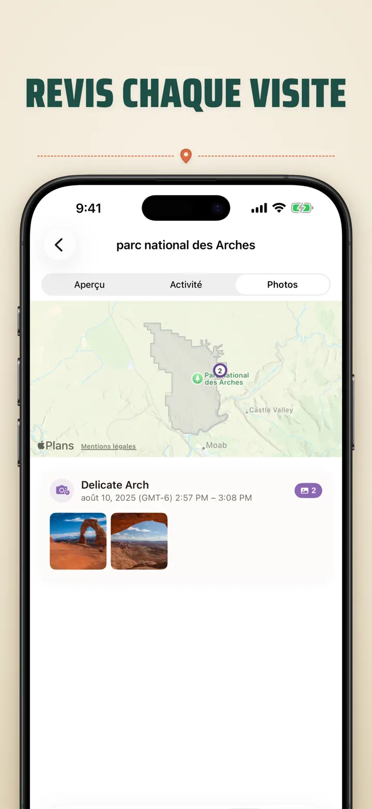

Où étais-je?
Lieux, photos et progression
Nouveau : les 103 sanctuaires Ichinomiya du Japon, chacun avec son insigne sculpté. Suivi automatique des visites et chronologie privée, sur votre appareil.
Télécharger dans l’App Store
À propos de l’app
Où étais-je — Ta mémoire de localisation personnelle
Envie de retrouver ce super restaurant du mois dernier ? De savoir si tu passes plus de temps au bureau qu'à la maison ? Où étais-je enregistre tes visites et trace une belle chronologie de ton parcours.
SUIVI AUTOMATIQUE
Aucune saisie manuelle. L'app enregistre discrètement tes arrivées et départs, créant un historique détaillé sans effort.
VUE CALENDRIER INTELLIGENTE
Visualise tes visites par jour, semaine ou mois. Le calendrier affiche le nombre de visites et de lieux uniques. Touche un jour pour voir où tu étais.
WIDGETS ÉCRAN D'ACCUEIL ET DE VERROUILLAGE
Consulte tes visites récentes avec le widget moyen de l'écran d'accueil. Ceux de l'écran de verrouillage affichent ta position, un chrono de présence en direct ou les visites du jour — touche-les pour ouvrir l'app.
LIEUX ORGANISÉS
Les lieux sont regroupés par région et ville. Attribue des catégories comme Maison, Travail, Sport ou Café. Crée les tiennes avec icônes et couleurs.
ANALYSES PUISSANTES
Découvre les tendances de ta vie :
- Répartition du temps par catégorie
- Tes lieux les plus visités
- Analyse du rythme hebdomadaire
- Tendances de fréquence des visites
- Durée des visites par lieu — jour, semaine, mois ou année
COLLECTION DE RÉGIONS PAR PAYS
Transforme tes voyages en puzzle ! Découvre combien d'états, provinces ou régions tu as visité dans chaque pays. Partage le résultat en image puzzle.
PROGRESSION DANS LES PARCS NATIONAUX
Pars à l'aventure ! Enregistre tes visites dans les parcs nationaux aux côtés de tes lieux du quotidien.
100 CHÂTEAUX CÉLÈBRES DU JAPON
En voyage au Japon ? Une collection intégrée suit tes visites aux 100 châteaux célèbres du pays. À retrouver dans Collections → Explorer → Japon.
COLLECTIONS PERSONNALISÉES
Apple Stores, musées, brasseries, librairies — ce que tu veux. Définis des mots-clés, elle se remplit seule. Ajoute ou retire à la main. Total, historique et carte pour chacune.
IMPORTE TON HISTORIQUE DE LOCALISATION
Tu viens d'une autre app ? Emporte tout ton historique — le format est détecté automatiquement, les gros exports sont gérés, et tu vois un aperçu avant tout import :
- Google Timeline (export Google Maps ou Google Takeout)
- Arc Timeline (les fichiers .json mensuels exportés depuis Arc)
- Moves (sauvegarde ProtoGeo / Facebook Moves)
GESTION EN MASSE
Gère tous tes lieux au même endroit. Recherche, trie et filtre. Sélectionne-en plusieurs pour les catégoriser ou supprimer en bloc.
VIE PRIVÉE D'ABORD
Tes données de localisation restent sur ton appareil. Aucun compte, aucun serveur. Tes déplacements ne regardent que toi.
PARFAIT POUR :
- Suivre tes heures et lieux de travail
- Te souvenir des restaurants et boutiques visités
- Analyser ta routine quotidienne
- Tenir un journal de voyage et enregistrer les parcs
- Notes de frais et suivi kilométrique
- Comprendre ta répartition du temps
FONCTIONNALITÉS :
- Détection automatique des arrivées et départs
- Vue calendrier avec chronologie quotidienne
- Widgets écran d'accueil et de verrouillage avec liens directs
- Regroupement des lieux par région et ville
- Catégories personnalisées avec icônes et couleurs
- Suggestions intelligentes depuis Apple Plans
- Historique détaillé avec durée
- Durée des visites par lieu (jour/semaine/mois/année)
- Tableau de bord analytique
- Recherche et filtrage
- Régions par pays avec image puzzle partageable
- Suivi des parcs nationaux
- 100 châteaux célèbres du Japon (intégré)
- Collections personnalisées avec mots-clés automatiques, édition manuelle et stats
- Gestion en masse
- Import depuis Google Timeline, Arc Timeline et Moves
- Fonctions d'export
- Aucun compte requis
- Design respectueux de la vie privée
Commence aujourd'hui ta mémoire de lieux. Télécharge Où étais-je et n'oublie plus jamais où tu es allé.
Privacy Policy: https://masawata.net/privacy-policy.html Terms Of Service: https://www.apple.com/legal/internet-services/itunes/dev/stdeula/
Captures d’écran








Où étais-je?
Nouveau : les 103 sanctuaires Ichinomiya du Japon, chacun avec son insigne sculpté. Suivi automatique des visites et chronologie privée, sur votre appareil.
Télécharger dans l’App Store